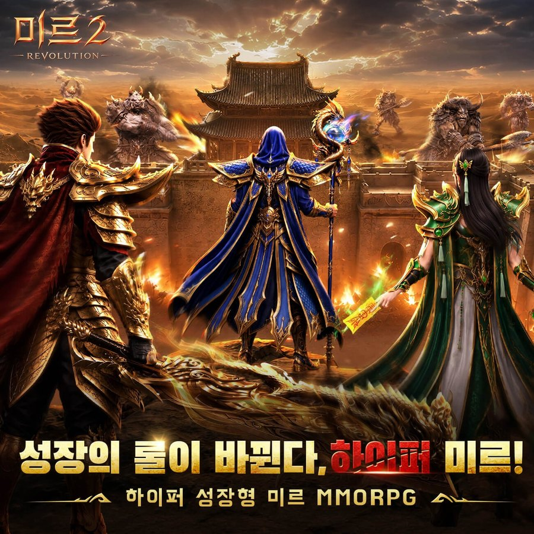
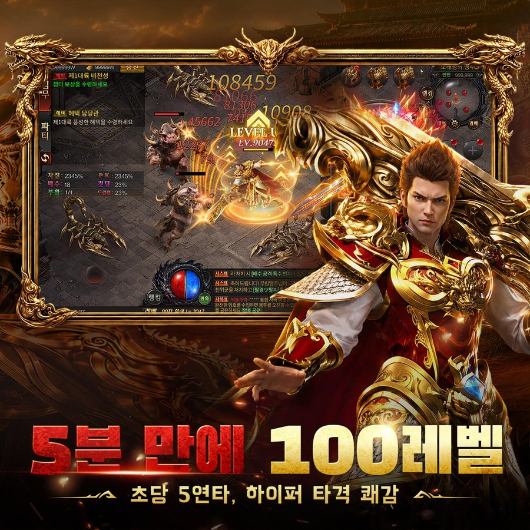
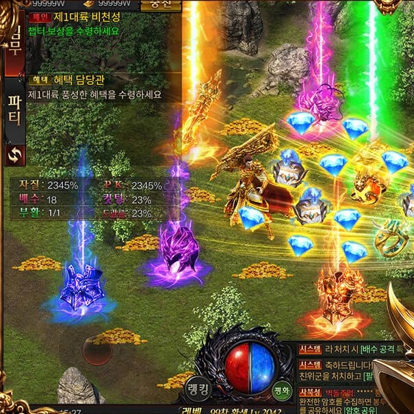
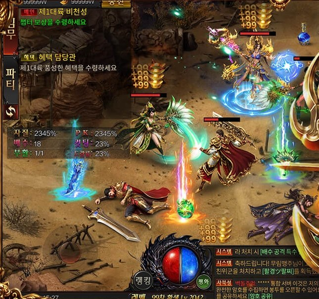
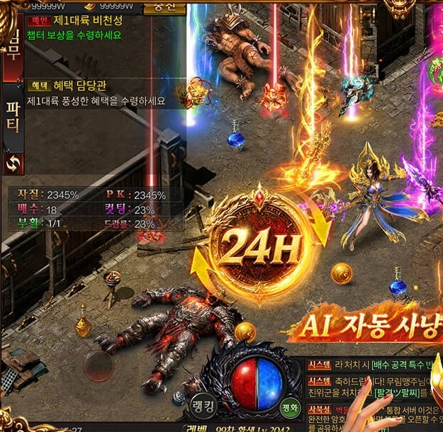
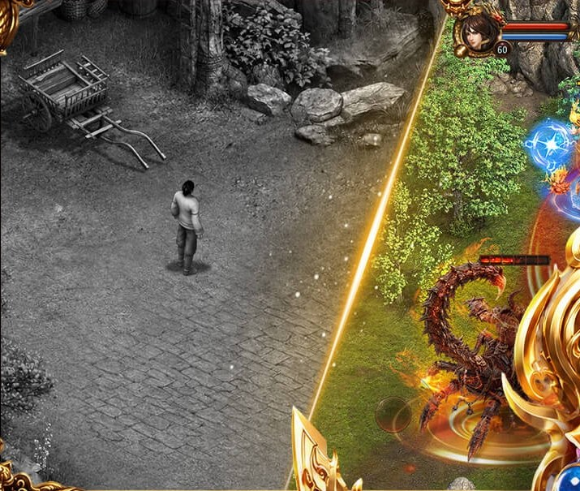
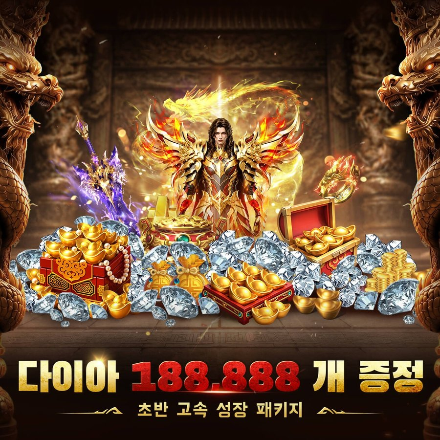

미르의 전설2: 레볼루션 사전예약 프리뷰, 신작 모바일MMORPG
공식 영상이랑 상점 소개글을 보다 보면 '5분 만에 100레벨'이라는 말이 계속 반복해서 나오더라고요. 오늘은 미르의 전설2: 레볼루션 사전예약 프리뷰를 구글플레이·원스토어·App Store 소개글과 공식 유튜브 기준으로 정리해 봤어요. 5분 컷(?)이라니 솔깃하긴 하죠.
미르 시리즈 신작이라는 점만으로도 눈이 가는데요, 일단 소개글에 적힌 것부터 하나씩 볼게요.
1. 한눈에 보는 레볼루션
미르의 전설2: 레볼루션은 아직 정식 출시 전이고 사전예약을 받는 모바일 MMORPG예요. 표로 먼저 묶어 볼게요.
| 항목 | 내용 |
|---|---|
| 장르 | 모바일 MMORPG, 소개글 표기 '하이퍼 성장형 미르 MMORPG' |
| 플랫폼 | 안드로이드(구글플레이·원스토어), iOS(App Store) |
| 이용등급 | 원스토어 12세 이용가, App Store 12+ |
| 출시일 | 상점 표기 11월 중순(원스토어 '2026년 11월 중순', App Store 예약 출시일 11월 17일), 공식 공지로 확정된 건 아님 |
| IP 표기 | 구글플레이 소개글 첫 줄 '액토즈 IP 공식 라이선스' |
| 슬로건 | "성장의 룰이 바뀐다, 하이퍼 미르!" |

보시면 위쪽 로고에 '미르2 REVOLUTION', 아래에 슬로건이 적혀 있어요. 하이퍼 미르라니 이름부터 기세가 대단하네요(ㅋㅋ)
이미지 출처: 원스토어 사전예약 페이지(미르의 전설2: 레볼루션)
2. 5분 만에 100레벨과 초당 5연타
"5분 만에 100레벨"과 "초당 5연타"는 공식 상점과 공식 영상에 실린 홍보 문구인데요, 어떤 조건에서 가능한지는 공식 설명에 나와 있지 않아요.
- 상점 소개글은 "1초에 5번 몰아치는 극강의 공격 속도"를 내세우고, 공식 이미지에는 "5분 만에 100레벨", "초당 5연타, 하이퍼 타격 쾌감"이 적혀 있어요.
- 이수근 영상 설명란에도 "5분 만에 100레벨, 초당 5연타로 숙적까지 단숨에 격파!"라는 문장이 있어요.

지금 보시는 컷이 문구가 그대로 박힌 공식 이미지입니다
이미지 출처: 원스토어 사전예약 페이지(미르의 전설2: 레볼루션)
저는 이 문구는 홍보용 얘기로 보고 있어요. 5분보다 100레벨 이후 구간이 어떻게 돌아가는지가 더 궁금하네요.
3. 현상금 사냥과 공성전
상점 소개글에서 확인되는 대표 콘텐츠는 필드 보스를 노리는 현상금 사냥과 사북성에서 벌어지는 공성전이에요.
현상금 사냥은 소개글 제목이 "끝없는 현상금 사냥, 전설급 희귀 장비 무작위 드랍"인데요, 본문에는 전 필드에 깔린 수많은 보스들이 기다린다고 적혀 있어요. 이수근 영상 제목에도 "잡몹부터 터지는 역대급 드랍!"이 들어 있으니 드랍을 홍보 포인트로 잡은 건 분명해 보이네요.

드랍 빛줄기가 필드에 쭉 서는 연출이에요
이미지 출처: 원스토어 사전예약 페이지(미르의 전설2: 레볼루션)
공성전은 무대가 사북성인데요, 소개글 제목이 '성주 보상 100% 균등 분배'예요.

공성전은 한 화면에 캐릭터가 모이는 교전으로 소개돼요
이미지 출처: 원스토어 사전예약 페이지(미르의 전설2: 레볼루션)
개인적으로는 성주 보상이 참전한 사람들에게 나뉜다는 대목이 눈에 띄었어요. 성주 혼자 가져가는 구조는 아니라는 뜻으로 읽히는데, 분배 세부 방식은 공개된 게 없거든요.
4. 자동 사냥, 24시간 AI 자동 사냥
자동 사냥은 소개글에 '24시간 AI 자동 사냥'으로 적혀 있는데요, 설명된 범위는 오프라인 상태에서도 전투와 파밍이 이어지는 시스템이에요.
'AI'라는 말이 붙어서 거부감이 드는 분도 계실 텐데요, 소개글은 출퇴근길이나 짧은 틈새 시간에도 즐길 수 있다는 쪽으로 풀어 줘요.

'24H' 아이콘 오른쪽 아래에 'AI 자동 사냥' 글자가 보입니다
이미지 출처: 원스토어 사전예약 페이지(미르의 전설2: 레볼루션)
다만 자동 사냥이 어디까지 알아서 해 주는지는 소개글에 더 적혀 있지 않아요.
5. 그래픽, 신규 3D 모델링
공식은 '신규 3D 모델링'과 '화려한 스킬 이펙트'로 비주얼을 크게 끌어올렸다고 소개하는데요, 옛 화면과 새 화면을 한 컷에 비교해 보여 줘요.
소개글 문구는 "비주얼 대폭 업그레이드, 고퀄리티 그래픽의 귀환"이에요. 이미지를 보시면 왼쪽은 흑백 쿼터뷰 시점의 옛 화면이고, 오른쪽은 컬러로 바뀐 새 화면이네요.

흑백에서 컬러로, 화면 전체의 색감과 바닥 질감이 달라진 게 한눈에 들어옵니다
이미지 출처: 원스토어 사전예약 페이지(미르의 전설2: 레볼루션) · 홍보용 비교 컷
6. 이수근 홍보 영상 두 편
홍보모델은 이수근이고, 공식 유튜브 '미르의 전설2: 레볼루션 (Official)' 채널(@XG130)에 영상이 두 편 올라와 있어요.
데일리게임 10월 23일 보도에 따르면 이수근이 공식 홍보모델로 발탁됐어요.
첫 번째 영상은 제목이 "[미르의 전설2: 레볼루션] 이수근 첫 TVC 공개! / 5분 만에 숙적을 박살낸 비장의 무기는?!"인데요, 설명은 "숙적과 다시 마주친 이수근, 이번에는 단 5분 만에 승부를 끝낸다?!"예요. (영상 보기)
첫 번째 영상 썸네일에는 '이수근 · 왕의 귀환'이 적혀 있어요
이미지 출처: 미르의 전설2: 레볼루션 공식 유튜브(@XG130)
두 번째 영상은 제목이 "'진짜 한 마리만 더!' 이수근이 멈추지 못한 이유?! / 잡몹부터 터지는 역대급 드랍!"이에요. 마지막 한 마리만 잡으려던 이수근이 10분이 지나도 사냥 중인 이유가 "잡몹부터 터지는 시원한 드랍"이라고 설명하더라고요. (영상 보기)
두 번째 썸네일 문구는 "마지막 한 마리만 더!"입니다
이미지 출처: 미르의 전설2: 레볼루션 공식 유튜브(@XG130)
두 영상 모두 설명란에 "사전예약 절찬 진행 중!"이 적혀 있고, 보도에 따르면 메이킹 필름 같은 영상이 공식 유튜브에 순차 공개될 예정이라고 해요. 본편이 올라오면 어떤 장면이 나올지도 궁금해지네요.
7. 사전예약과 혜택
사전예약은 구글플레이·원스토어·App Store 중 쓰는 스토어의 사전예약 페이지에서 신청하면 돼요. 상점 소개글이 내건 혜택은 "접속 즉시 다이아 188,888개 증정"과 '초반 고속 성장 패키지'인데요, 스토어별 안내는 아래와 같아요.

다이아 188,888개와 초반 고속 성장 패키지가 그림 아래 문구로 적혀 있어요
이미지 출처: 원스토어 사전예약 페이지(미르의 전설2: 레볼루션)
- 스토어 소개글 : 접속 즉시 다이아 188,888개, 초반 고속 성장 패키지를 조건 없이 지급한다고 적혀 있더라고요.
- 원스토어 : 혜택란은 '아이템 · 전용 코스튬'이고, 사전예약과 사전 다운로드를 해야 혜택을 받아요. 계정당 1회라 여러 기기로 신청해도 한 번만 인정되고, 게임 아이템은 게임사가 제공하는 거라 원스토어와는 무관하다고 안내해요.
- 원스토어 할인쿠폰 : 출시일 이후 순차 지급이고, 원스토어에서 받은 게임 안에서만 쓸 수 있어요.
- 추첨 경품(보도 기준) : 데일리게임 보도에 갤럭시 Z 폴드8, 순금 골드바 5g이 나오는데요, 스토어 페이지에는 이 문구가 보이지 않아요.
8. 아직 확인되지 않은 것
아직 공식으로 확인되지 않은 건 사전예약 종료일, 출시일 확정, 서비스 주체, 직업 구성, 5분 100레벨의 조건, 자동 사냥의 범위와 PC 버전 이렇게 여섯 가지예요.
- 사전예약 종료일 : 상점과 보도 어디에도 날짜가 없고, 영상 설명에 "사전예약 절찬 진행 중!"만 있어요. 종료일은 공식 공지에서 확인해 보세요.
- 정식 출시일 : 상점 표기 11월 중순까지만 확인돼요.
- 서비스 주체 : 스토어마다 개발자·판매자 표기가 달라요. 구글플레이 개발자명은 'Xsoga Game'으로 적혀 있습니다.
- 직업 구성 : 소개글에 직업 이름이 없어요.
- 5분 100레벨의 조건 : 자동 사냥인지, 패키지인지, 이벤트인지 어디에도 안 나와 있어요.
- 자동 사냥의 범위와 PC 버전 : 이동까지 알아서 하는지, PC에서도 나오는지는 공식 문구가 없습니다.
참고한 곳
· 구글플레이 미르의 전설2: 레볼루션
· 원스토어 사전예약 페이지
· App Store 미르의 전설2: 레볼루션
· 데일리게임 이수근 홍보모델 발탁 보도(2026.10.23)
· 공식 유튜브 영상(@XG130 채널)